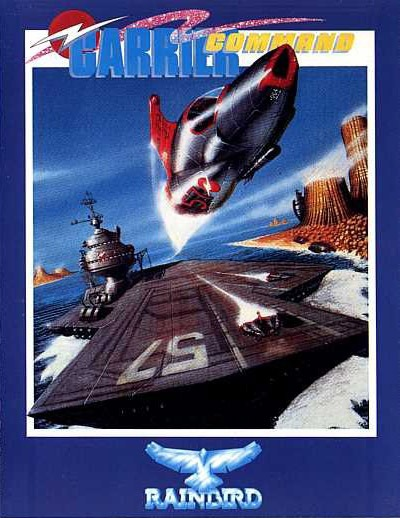
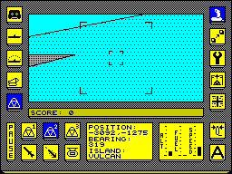
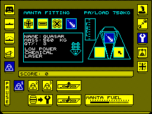
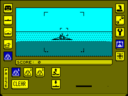

Carrier Command


{kind=link}

| Publisher: | Rainbird |
| Price: | £14.95 Cass, 15.95 Disk |
| Year: | 1989 |
| Source: | CRASH, Issue 63 |

Take command of a plastic bag!
Okay, think you can handle anything? How about an entire aircraft carrier, including six Manta attack aircraft and six amphibious tanks? The carrier’s semi-automated, but you’re still responsible for everything from setting repair priorities to remotely-piloting a Manta on its low-level bombing runs. No problem? Well what about strategic command of the entire Carrier Command operation — not only plotting the carrier’s course, but also setting production priorities of the factory islands you’ll be building?
You still think you’re up to it Admiral? ... Great! I’ll give you the full briefing then. First the background details. There’s a chain of 32 islands in the Southern Ocean resting on a large, geological fault which can be used to produce huge quantities of energy. In 2166 there’s obviously nothing more valuable and we’ve had built, in secret, two automated carriers to set up resource centres on all the islands. But as soon as sea trails began for the Epsilon and Omega the latter ‘malfunctioned’. The terrorist organisation Stanza has inserted a virus, turning the Omega into a war machine.

As we speak the Omega has arrived at the islands and may have already begun establishing a network of resource, factory and defence islands. Resource islands use geothermal energy to manufacture raw materials, automatically shipped to factory islands where they’ll be converted into various supplies. All the islands have missile silos, but defence islands also have ‘Bat Caves’ which launch aircraft. To combat the Omega you must set up your own island network, and to produce vital supplies such as fuel for your carrier and even replacement Mantas.
As soon as you’ve got some islands producing supplies you must set how many units of an item you want, and set priorities for each of the nineteen different products. All the finished items are then shipped to a stockpile island where you can pick them up. Merely keeping your carrier running smoothly is hardly going to win the game though, for that you’ve got to go on the offensive. And for certain you’re well equipped for it. So let’s go on a quick tour of the Epsilon. Starting at the top there’s the weapons turret, it has a magnification factor of up to eight and allows you to manually aim either a laser or Hammerhead missiles. For defence there’s two missile decoys which can be deployed in a variety of patterns. The more they get hit though, the less effective they become and if the carrier gets hit then it’s time for the repair screen. This shows a diagram of the carrier and its eight different sections, from superstructure to radar to repair systems. It’s up to you to set repair priorities.

The point of the carrier however, is what it carries. The bulk of the offensive firepower is provided by the Multi-Role aircraft for Nautical Tactical Assault, or Mantas. There’s room for six onboard, but only three can ever be active at one time. These can be armed with Quasar lasers, Assassin homing missile or Quaker bouncing bombs. As with all the vehicles you can either program Mantas to go to a specific point, or take direct control of them looking out the cockpit window.
Also onboard the Epsilon are six Walrus amphibious tanks. These can be armed with Avatar lasers or Harbinger wireguided missiles (you control the missile in-flight). They can also carry ACCB’s which, when planted on a neutral island, will construct a resource, defence, or factory centre.
Most of the combat in the Carrier Command mission is with enemy islands. The most direct way of taking them over is to destroy the command centre, usually by Manta attack leaving the carrier just out of range of enemy missiles. Once the command centre is destroyed the missile launchers blow up and you can use a Walrus tank to plant an ACCB. Alternatively you can provide covering fire, possibly using a Manta to destroy the ‘Bat cave’, for a Walrus with a virus bomb. If you succeed in getting to the command centre with the Walrus, the virus bomb can be fired into it, turning the island over to your command without destroying all its buildings.

The ultimate objective of Carrier Command is to reclaim all 32 islands, but along the way you’ve got to take on the enemy carrier which has its own heavily armed aircraft to protect it. Tracking it down and destroying it won’t be easy. Fortunately for arcade fans there is an ‘action game’ which starts with all the islands already occupied, divided into two resource networks for the carriers which are in close proximity.
Over two years in the programming, Carrier Command is something of a miracle. It’s taken one of 1988’s most revolutionary and complex ST/Amiga games and put it all into a 128K Spectrum. A time acceleration feature has been added so cruising between islands is extremely quick. More important, however, is the dramatic improvement in gameplay with both the strategy and arcade elements significantly tweaked. An example: to take an island on the ST you simply stand offshore in your carrier and use the laser turret on the command centre. On the Spectrum the laser has been weakened, forcing you either to come in range of the island’s missiles or use a Manta.
Most games you play for a few hours and you’ve seen all there is. Carrier Command you play for a few hours just to mess around with the controls, of which there’s lots, but so good is the icon system that you rarely need to refer to the instruction manual. And just as dazzling as the gameplay are the graphics. Apart from wireframe missiles, aircraft and tanks everything is in solid 3-D, yet you can zoom around solid islands and volcanoes in a Manta at ST speed. This is quite simply an incredible game which will take ages, and lots of saves, to complete even in the action game. 200% Value For Money.
STUART ... 98%
CARRY ON CRUISING
- All the islands are connected by undersea pipelines, but if a red island is between two blue islands then supplies will move between them very slowly, if at all
- When controlling Mantas and Walruses, be careful not to stray too far from the carrier, or your vehicle will lose radio contact and be destroyed
- Protect your stockpile island before all others or you’ll lose your stored resources
- Don’t let the carrier’s fuel level get too low, or you’ll be stranded
- When advancing, always move the stockpile island to keep up — after taking all its stocks
- Use priority systems intelligently — there’s only a certain amount of resources/repair units, if you put everything on high priority it’s exactly the same as everything on low priority
What? You mean it’s actually here? This isn’t an April Fool joke, is it? Anyway, after such a long wait it’s sure to be a disappointment. But wait a minute, what’s this I spy with my little aye aye? All the gameplay from the 16-bit versions and superb solid 3-D graphics, that’s what! There’s just so much to do; invading islands while controlling up to six vehicles plus the carrier itself. But the huge range of options offered would cause headaches if it weren’t for the brilliant icon system. It’s dead easy to use once you’ve found your sea legs, even for an outright landlubber like me! Being a bit of a closet strategy fan, I just love the brain-bending tactics involved in Carrier Command — the game is immensely absorbing without making you at all seasick!
PHIL ... 96%
After umpteen years (well two) of waiting for the Spectrum version, you can now pilot your huge armoured ship around friendly and not so friendly (in fact downright hostile) islands. Of course, the enemy carrier gives you plenty of aggro, and I found that most of my games were spent chasing around reclaiming the islands that I had managed to conquer. But Carrier Command has converted surprisingly well from 16 to 8-bit. Especially impressive are the wire frame/solid 3-D substitutes which zip about the screen at a surprisingly fast rate. But what’s even more amazing is that all the options and gameplay of the original have been retained. The many icons are a little confusing to use at first but the comprehensive instruction manual soon sets you straight. We’ve waited a long time for Carrier Command and I’m pleased to say that it doesn’t disappoint.
MARK ... 97%
THE ESSENTIALS
| Joysticks: | Cursor, Kempston (joystick and mouse), Sinclair |
| Graphics: | Amazingly fast, solid 3-D |
| Sound: | A really catchy title tune and a variety of good in-game effects |
| Options: | Definable keys. Action or strategy game. |
| General rating: | The best sea-faring game ever — it was well worth waiting for |
| Presentation: | 98% |
| Graphics: | 98% |
| Sound: | 96% |
| Playability: | 96% |
| Addictive qualities: | 98% |
| Overall: | 97% |